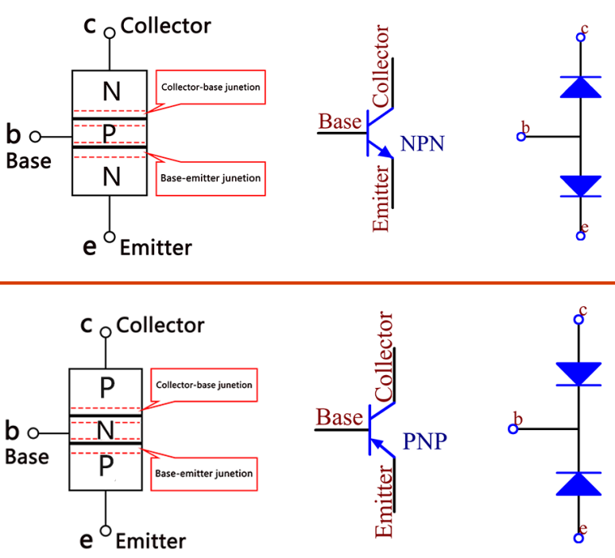
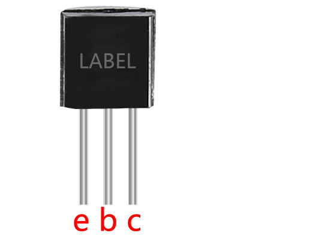

Note
Hello, welcome to the SunFounder Raspberry Pi & Arduino & ESP32 Enthusiasts Community on Facebook! Dive deeper into Raspberry Pi, Arduino, and ESP32 with fellow enthusiasts.
Why Join?
Expert Support: Solve post-sale issues and technical challenges with help from our community and team.
Learn & Share: Exchange tips and tutorials to enhance your skills.
Exclusive Previews: Get early access to new product announcements and sneak peeks.
Special Discounts: Enjoy exclusive discounts on our newest products.
Festive Promotions and Giveaways: Take part in giveaways and holiday promotions.
👉 Ready to explore and create with us? Click [here] and join today!
Transistor¶

Transistor is a semiconductor device that controls current by current. It functions by amplifying weak signal to larger amplitude signal and is also used for non-contact switch.
A transistor is a three-layer structure composed of P-type and N-type semiconductors. They form the three regions internally. The thinner in the middle is the base region; the other two are both N-type or P-type ones – the smaller region with intense majority carriers is the emitter region, when the other one is the collector region. This composition enables the transistor to be an amplifier. From these three regions, three poles are generated respectively, which are base (b), emitter (e), and collector (c). They form two P-N junctions, namely, the emitter junction and collection junction. The direction of the arrow in the transistor circuit symbol indicates that of the emitter junction.
Based on the semiconductor type, transistors can be divided into two groups, the NPN and PNP ones. From the abbreviation, we can tell that the former is made of two N-type semiconductors and one P-type and that the latter is the opposite. See the figure below.
Note
s8550 is PNP transistor and the s8050 is the NPN one, They look very similar, and we need to check carefully to see their labels.

When a High level signal goes through an NPN transistor, it is energized. But a PNP one needs a Low level signal to manage it. Both types of transistor are frequently used for contactless switches, just like in this experiment.
Put the label side facing us and the pins facing down. The pins from left to right are emitter(e), base(b), and collector(c).

Note
The base is the gate controller device for the larger electrical supply.
In the NPN transistor, the collector is the larger electrical supply and the emitter is the outlet for that supply, the PNP transistor is just the opposite.
Example
2.15 Two Kinds of Transistors (For MicroPython User)
2.16 Control Another Circuit (For MicroPython User)
3.1 Beep (For MicroPython User)
3.2 Custom Tone (For MicroPython User)
7.1 Light Theremin (For MicroPython User)
7.3 Alarm Siren Lamp (For MicroPython User)
7.8 RFID Music Player (For MicroPython User)
7.9 Fruit Piano (For MicroPython User)
7.10 Reversing Aid (For MicroPython User)
3.1 - Beep (For Arduino User)
3.2 - Custom Tone (For Arduino User)
2.15 - Two Kinds of Transistors (For Arduino User)
2.16 - Control Another Circuit (For Arduino User)
2.3 Service Bell (For Piper Make User)
2.11 Reversing System (For Piper Make User)
2.13 Reaction Game (For Piper Make User)